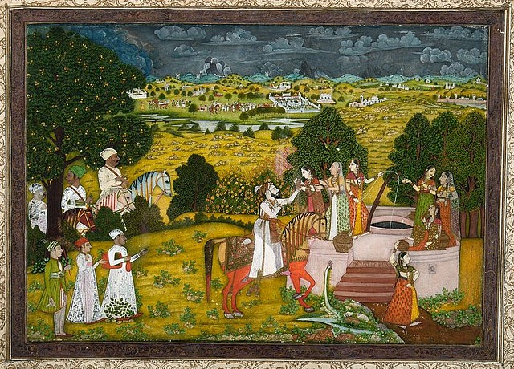
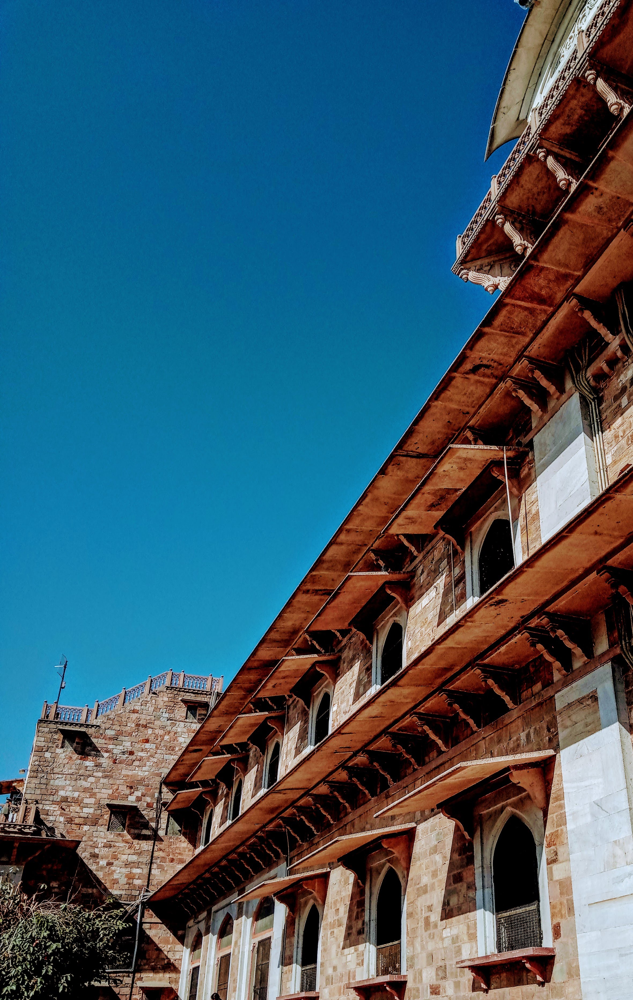
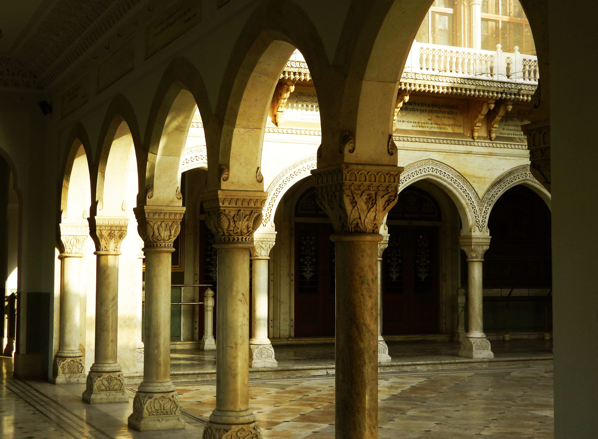
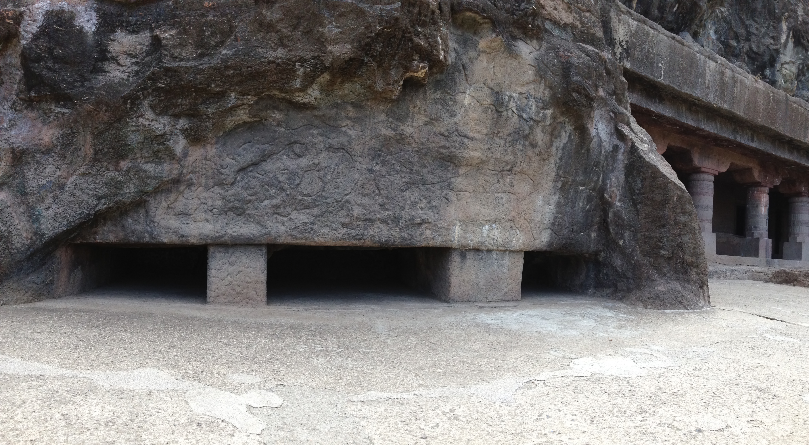
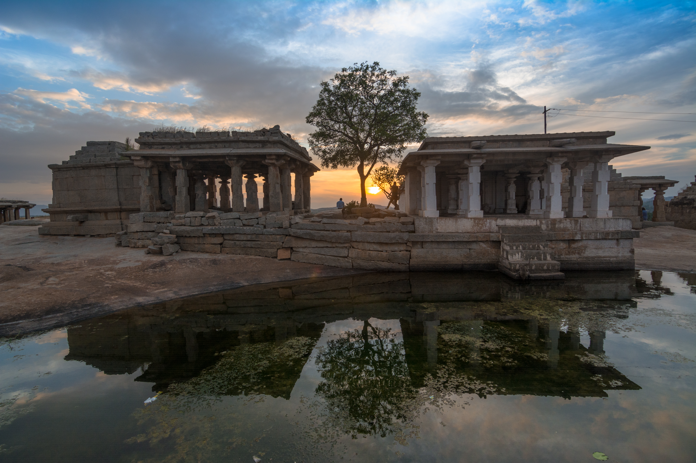
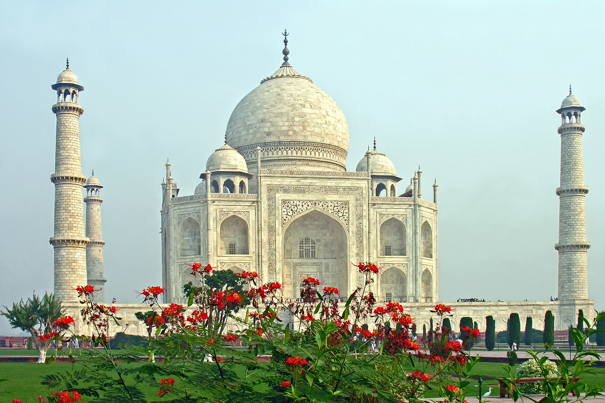
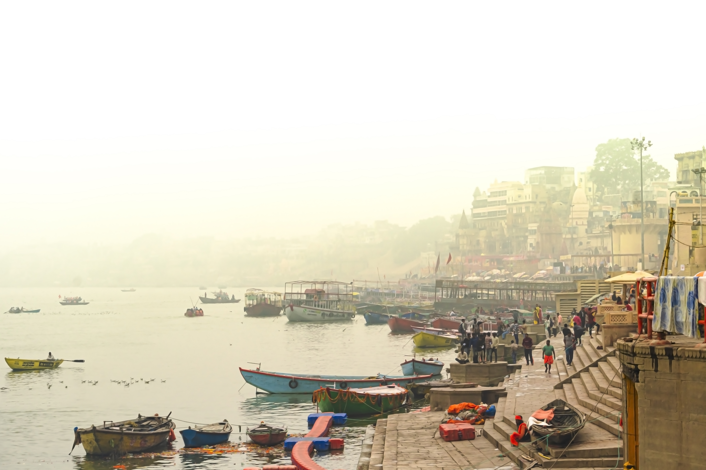

India,
is not one story.
A country cannot be held in one frame. Begin with the traces it leaves behind: deep stepwells, carved stones, water, and ancient thresholds.


Traces preserved,
questions held open.
Entering the museum halls: Albert Hall, CSMVS, corridors where centuries converse. Heritage is not a frozen relic behind glass, but a dialogue across generations.

Chiseled from the earth,
lit by devotion.
Monolithic caves hollowed from volcanic basalt at Ajanta and Ellora. Murals, rock carvings, and meditating Buddhas carved directly out of the living mountainside.

A map is always
a point of view.
From Rennell’s 18th-century survey lines to Mughal miniatures, the subcontinent has been charted, interpreted, and reimagined. Yet the rivers and mountains precede every political border.

Boulders, granite,
and empires remembered.
The colossal ruins of Vijayanagara rise among surreal granite boulders along the Tungabhadra. An architectural flowering at the crossroads of medieval Southern India.

Symmetry, memory,
and transience.
White Makrana marble reflecting the changing light of the Yamuna. Monumental devotion and precision engineering balanced against the fragility of human power.

The river carries
the morning light.
Along the ghats of Varanasi, heritage is not locked in an archive. It is spoken in chants, bathed in sacred currents, illuminated by brass lamps, and lived anew with every sunrise.

India,
in all its complexity.
The stark peaks of Ladakh, ancient passes of Zanskar, and high alpine rivers. The film settles where earth meets sky—an invitation to step beyond the prologue into the journal.
Viraaasat · India, in all its complexity
A place for the
whole picture.
Viraaasat is an independent, story-first publication exploring India: its histories and futures, its people and systems, its beauty and difficult truths.
Not to settle the question.
To see it from closer in.
The first story
is still being found.
This space is reserved for the story the editors choose.
Its subject, title and direction remain open.